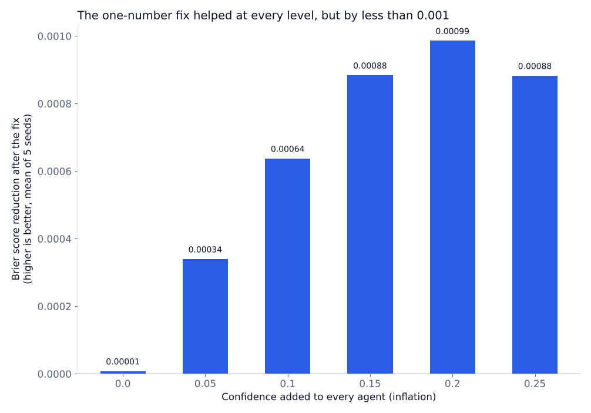

Experiment · Agentic AI · Calibration
A one-number fix for overconfident agents worked, but barely
Subtracting the measured overconfidence is safe, but it is not enough.
By Muzammal Hussain · 24 October 2026 · 4 min read
Language models often sound more certain than they should. If an agent says "95% sure" but is right only 80% of the time, any system that weighs its answers by confidence will trust it too much. The simplest fix is to measure how much the agent overstates itself on a test set and subtract that gap from every future score. I wanted to know how much this one-number fix really helps.
Key findings
- The fix lowered the Brier score at every level of overconfidence I tested, and in all five runs at the highest level.
- The gain was tiny: at most 0.001, on Brier scores of about 0.15.
- Calibration error did not improve: it was slightly worse after the fix at four of the five overconfidence levels, and only better at the highest one.
- Accuracy did not change, as expected, because the fix moves confidence and never changes an answer.
- These are simulated agents, not language models. No LLM was called.
What I did
I used three simulated agents with set skills of 80%, 70% and 62% on a yes/no task. Each agent reports a confidence close to its skill, plus an extra amount I call inflation: 0, 0.05, 0.10, 0.15, 0.20 or 0.25. For each of five random seeds I created 1,000 scenarios to measure the gap between reported confidence and real accuracy, and a separate 2,000 scenarios to test the fix. The fix subtracts that measured gap from every confidence.
I scored the result with the Brier score (the average squared gap between confidence and what really happened) and expected calibration error, ECE (when the agent says 80%, is it right about 80% of the time?). For both, lower is better.
Results

| Inflation | Brier reduction (mean) | ECE before | ECE after |
|---|---|---|---|
| 0 | 0.00001 | 0.052 | 0.052 |
| 0.05 | 0.00034 | 0.051 | 0.052 |
| 0.10 | 0.00064 | 0.050 | 0.052 |
| 0.15 | 0.00088 | 0.049 | 0.051 |
| 0.20 | 0.00099 | 0.049 | 0.049 |
| 0.25 | 0.00088 | 0.049 | 0.049 |
At inflation 0.25 the ECE fell slightly in every seed (for example 0.0589 to 0.0582 in the first seed), but the change only shows at the fourth decimal place. Accuracy stayed between 78.3% and 80.4% depending on the seed, the same before and after the fix.
What this means
A single shift is like correcting a watch that runs five minutes fast: it works if the error is the same at every hour. Here the overconfidence was not the same everywhere, because confidence is capped at 0.99 and the agents have different skills, so one shift for all of them could only remove a small part of the problem. In my simulator the fix is safe but weak. A per-agent correction, or one that bends the whole confidence curve, is the obvious stronger baseline.
The ECE result is the more useful lesson for me: a fix can improve one score and make another slightly worse, so a calibration method should always be reported with more than one measure.
Limitations
The agents, the task and the way overconfidence is added are all my own choices. There are five seeds per level, and the differences are so small that they could change with other settings. The correction is deliberately the simplest possible one and is not compared yet with standard methods such as temperature scaling or isotonic regression. Nothing here measures a real language model.
What I will test next
- A separate correction for each agent, and standard calibration methods on the same data.
- More seeds, so the very small differences come with a measure of uncertainty.
- Real confidence scores from qwen2.5:3b and llama3.1:8b, where the overconfidence is not added by me.
The experiment runs in plain Python. The results above are computed from outputs/metrics_summary.csv in the repository; it is a follow-up to Averaging agents' confidence made the team less trustworthy.